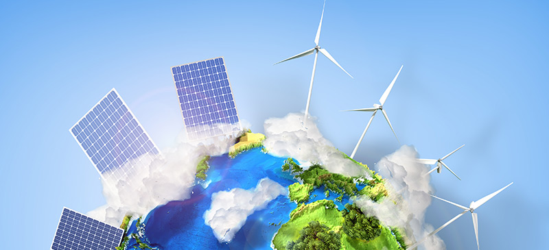

Ensure access to affordable, reliable, sustainable and modern energy for all. oal 7 aims at ensuring access to affordable, reliable, sustainable and modern energy for all. Energy is central to nearly every major challenge and opportunity the world faces today. Sustainable energy is an opportunity to transform lives, economies and the planet. Still, one in five people lack access to electricity and, as demand continues to rise, there needs to be a substantial increase in the production of renewable energy across the world. The proportion of the world's population with access to clean fuels and technologies for cooking increased from 51% in 2000 to 58% in 2014, although there has been limited progress since 2010. Goal 7 is about ensuring access to clean and affordable energy, which is key to the development of agriculture, business, communications, education, healthcare and transportation.
Space technologies are central in:
•Critical infrastructure monitoring, particularly with regards to energy networks
•Power grid synchronisation
•Seismic surveying
•Identification of optimal sites for the production of renewable energy
•Solar and wind energy production forecasting to estimate the amount of energy that needed from other sources